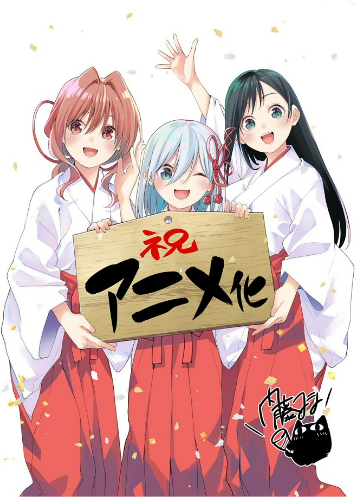

Tài khoản Twitter chính thức cho Manga Amagami-san Chi no Enmusubi (Tying the Knot with an Amagami Sister) của Marcey Naito đã thông báo vào 21/04/2023 rằng Manga sẽ được chuyển thể thành Anime truyền hình. Thông báo kỷ niệm hai năm ra mắt của Manga và là sinh nhật của Naito.
Câu chuyện được mô tả:
Uryu Kamihate đã có một khởi đầu khó khăn trong cuộc sống, nhưng dự định sẽ quên đi tất cả vào hướng đến mơ ước của mình là trúng tuyển vào trường y. Nhưng khi cậu đến ngôi nhà mới, một ngôi đền vẫn còn hoạt động, ước mơ về một nơi yên tĩnh để học tập của cậu tan thành mây khói. Cậu ấy sẽ không chỉ sống cùng ba chị em Amagami xinh đẹp, năng động - mà Cậu còn biết rằng mình phải kết hôn với một trong số họ và tiếp quản ngôi đền!
Shueisha đã xuất bản tập 19 của Manga vào ngày 3 tháng 2.
Naito đã ra mắt bộ truyện tranh trên tạp chí Weekly Shounen vào tháng 4 năm 2021. Kodansha đã xuất bản tập sách thứ chín của bộ truyện vào 16/03.


Chào mừng bạn đến với website: weiboo.com .Nơi chia sẽ tất tần tật những thông tin xoay quanh thế giới Otaku. Mong rằng đến với WEIBOO sẽ giúp bạn giải đáp những thắc mắc hiểu hơn về Otaku nhé!
Liên Hệ Bảo Mật Bản Quyền Quảng Cáo Anime đam mỹ Truyện tranh tu tiên Hinata Zenitsu Otaku là gì Anime dễ thương Waifu Obito Harem Manhwa Anime bách hợp Wibu là gì Oppa là gì Yandere là gì Anime là gì Manga là gì